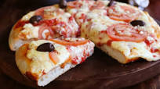

Volver
Pizza porteña

Descripcion
Es un tipo de pizza que se la llama “media masa”, porque a diferencia de la “pizza a la piedra”, la masa de esta pizza es esponjosa y más alta de lo normal, porque se logra justamente por estar preparada en un molde o fuente de pizza.
Ingredientes
- aceite de oliva 2cda
- agua 600cc
- harina 1kg
- levadura seca 10 gramos / fresca 50 gramos
- sal 30 gramos
- tomates 1kg
- muzzarela 1.2kg
- azucar 1cta
Pasos
- colocar la harina en un bowl
- agregar sal, aceite y azucar
- amazar
- agragar salsa de tomate
- precoccion en el horno aproximadamente 7 minutos
- agragar queso
- cocinar en el horno otros 10 minutos aproximadamente